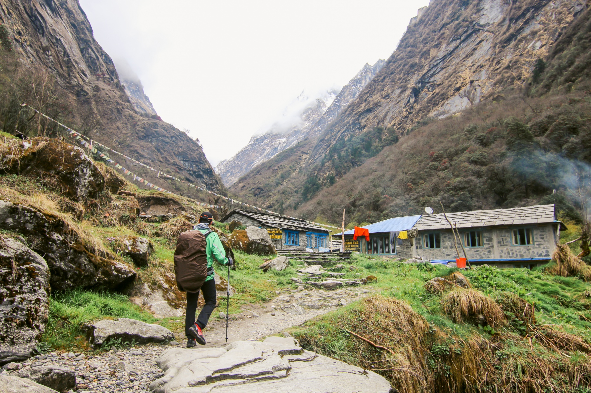
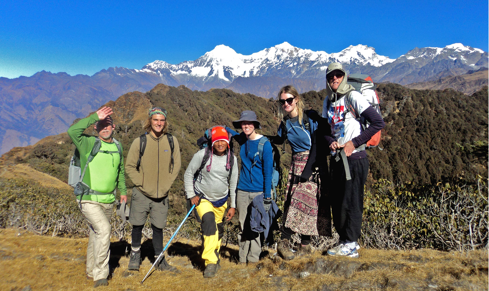

My First Trek to Annapurna Base Camp – A Journey Made Easy with Yatrika :
WRITTEN ON 6 March, 2025
Planning my first ever trek to Annapurna Base Camp felt overwhelming at first — I didn’t know where to start, what gear I needed, or how to find a reliable guide. That’s when I discovered Yatrika. Through their platform, I was able to connect with verified local guides, rent all my trekking gear affordably, and even join a group of fellow trekkers to share the experience. Yatrika’s detailed trek plans and homestay options made the journey smoother and more meaningful. Thanks to Yatrika, I didn’t just complete my trek — I made unforgettable memories with new friends and experienced Nepal’s beauty in the most authentic way.

Exploring the Manaslu Circuit – A Hidden Gem Made Accessible by Yatrika :
WRITTEN ON 30 April, 2003
As someone who loves off-the-beaten-path adventures, the Manaslu Circuit had always been on my list. But the remote nature of the trek and lack of clear planning resources made it seem difficult to organize on my own. That changed when I came across Yatrika. From day one, the platform guided me through everything — selecting the best time to go, finding affordable homestays along the route, and even comparing gear rental prices. I also connected with experienced trekkers through Yatrika’s community, who shared tips that made a huge difference. What felt impossible before became one of the best experiences of my life — all thanks to how Yatrika connects travelers with local expertise.